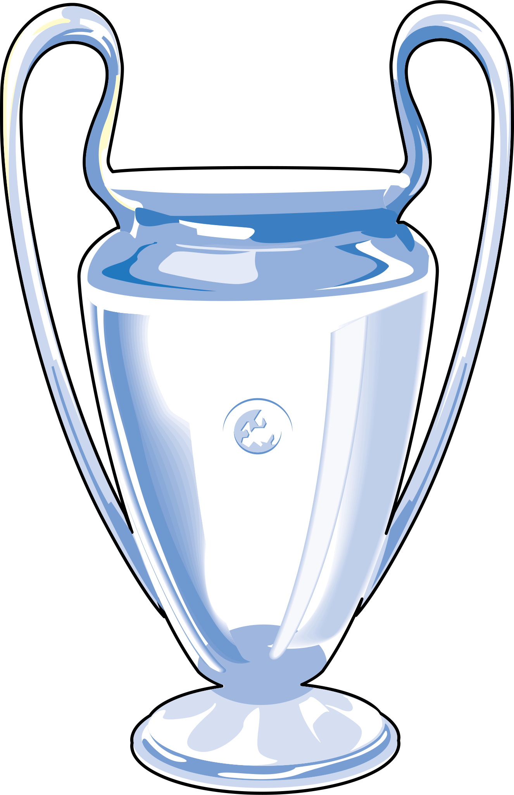

UEFA Champions League Ganadas
El real madrid volvió a coronarse campeón de europa en parís. Tras una brillante fase de grupos ante inter, sheriff y shakhtar donetsk, el equipo vivió tres noches mágicas en el santiago bernabéu frente a psg, chelsea y manchester city para alcanzar la final frente al liverpool.
El camino hacia kiev lo inició el conjunto blanco con una victoria en casa ante el apoel. Borussia dortmund y tottenham fueron los otros rivales en la fase de grupos, en la que el real madrid acabó segundo. En las eliminatoriase, para disputar su cuarta final en cinco temporadas.
El camino hacia cardiff estuvo marcado por la contundencia goleadora del conjunto blanco. Eliminó a nápoles, bayern de múnich y atlético de madrid. Una jugada mágica de benzema en el calderón selló el pase a la final. Además, destacó la figura de cristiano ronaldo: marcó 10 goles desde cuartos hasta la final.
El conjunto blanco llegó a la final de milán tras realizar una brillante fase de grupos: 5 victorias y 1 empate. Se sobrepuso a su única derrota -en cuartos, ante el wolfsburgo en alemania (2-0)- con una noche mágica de cristiano en el bernabéu (3-0). En semifinales eliminó al manchester city para acceder a su segunda final en 3 temporadas.
El conjunto blanco fue el mejor equipo de la competición europea de principio a fin. Invicto en la fase de grupos, eliminó a los dos vigentes finalistas para llegar a la final de lisboa. En la vuelta de semifinales, la exhibición del real madrid ante el bayern de guardiola (0-4) permanecerá mucho tiempo en la retina de los aficionados.

El real madrid llegó a la final de glasgow tras solventar sin problemas las dos fases de grupos. Eliminó a sus dos mayores rivales históricos -bayern de múnich y barcelona- en cuartos y semifinales, respectivamente. En la eliminatoria ante el barça, los golazos de zidane y raúl fueron un preludio de lo que se vio en la final.
El real madrid volvía a una final de champions apenas dos años después de la última y lo hacía con un único propósito: vengar la perdida en parís en 1981 ante el liverpool.
Aquel tanto, el único de mijatovic en toda la competición, puso la guinda a un partido perfecto de la cabeza a los pies de los de jupp heynckes. Destacaron especialmente la pareja de centrales que formaron hierro y sanchís, así como el incombustible fernando redondo, timón una vez más de los madridistas.
El real madrid levantó su sexta copa de europa en su octava final. Para alzarse son su sexto título en la competición, tuvo que remontar en el marcador. El partizán de belgrado se adelantó en la segunda mitad, con un gol de velibor vasovic.
Top de Jugadores
Cristiano Ronaldo
Con el Madrid, Cristiano consiguió 16 títulos: 4 Champions League, 3 Supercopas de Europa, 3 Mundiales de Clubes, 2 Ligas, 2 Copas y 2 Supercopas.

Benzema
El francés con 25 títulos conseguidos con el Real Madrid, es el jugador que más trofeos colecciona en la historia del conjunto blanco.
Marcelo
Marcelo es uno de los mejores jugadores de nuestra historia. Después de 16 temporadas en el club, el brasileño alcanzó un récord de leyenda: se convirtió en el que más títulos había logrado hasta entonces con el Real Madrid (25).

/origin-imgresizer.eurosport.com/2017/03/12/2042188-42839247-2560-1440.jpg)
Sergio Ramos
Cuatro Copas de Europa que presiden un palmarés espectacular compuesto por 22 títulos, en el que también están 4 Mundiales de Clubes, 3 Supercopas de Europa, 5 Ligas, 2 Copas del Rey y 4 Supercopas de España.